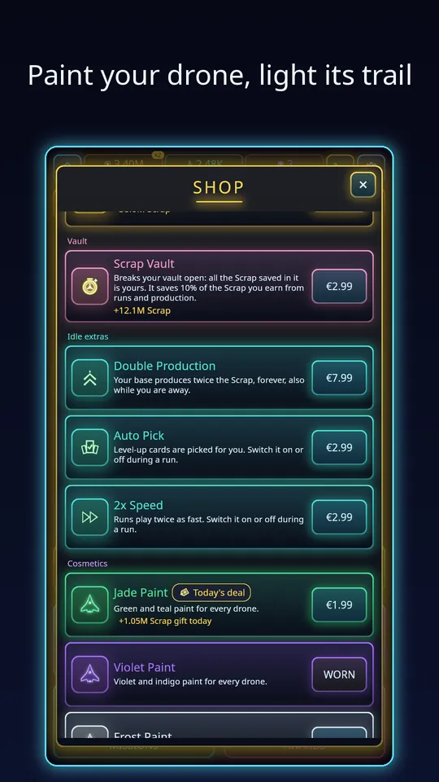

If you have seen the screenshots and wondered what Void Swarm: Idle Survivor actually is, here is the short version: it is an Android swarm-survivor with an idle base attached. You fly a small drone through a void packed with enemies, your weapons shoot on their own, and every level-up lets you pick something new. I built it as a solo developer, so this is a first-hand overview of how it plays and how it is monetised.
A run in one paragraph
You start a run by tapping the hexagon LAUNCH button on Home. You drag anywhere on the screen to move; that is the whole control scheme. Your weapons fire automatically at whatever is near, so the skill is in positioning: staying out of the crowd, collecting the crystals that drop, and leaving yourself an escape route. Crystals fill an experience bar, and each level-up offers a choice of weapons and passives. A run lasts about ten minutes, with mini-bosses along the way, and the boss arrives at the end.

What you meet in the void
The swarm is not one type of enemy. There are chasers that rush you, heavies that soak damage, shooters that keep their distance, dashers that lunge, splitters that break into smaller pieces and summoners that bring more friends. The game has 20 sectors, each with its own swarm, a mini-boss and a boss, and every sector has five difficulty tiers: Normal, Hard and three Nightmares. When you want a different kind of challenge there is also an Endless mode, where the only goal is to last as long as you can.
The loadout: weapons, passives and evolutions
There are 20 weapons with their own patterns, including blasters, orbiting saws, chain lightning, homing missiles, sweeping beams and mines. Alongside them are 15 passive upgrades such as damage, fire rate, area, critical hits and knockback. Max out a weapon, pair it with the right passive and it can evolve into something stronger; there are 10 evolutions. If that sounds interesting, our guide to how weapon evolutions work explains the pairings in detail. You also choose from 8 drones, each with its own starting weapon and perk.
The idle base
You can see all of this yourself by playing the free game on Google Play, but here is how it works.
This is the part that makes the game an idle survivor rather than only an arena shooter. Your base has buildings that produce Scrap and Research Points every second, and they keep producing while the game is closed. When you come back you collect what was earned. Scrap buys hangar and base upgrades that make every run stronger, and Research Points feed a research tree with 216 upgrades across economy, combat, survival and expedition.

I wrote a separate piece on how the idle base and offline earnings work if you want the numbers behind it.
Progress for months, not just minutes
Once the early sectors are easy you can prestige for Void Cores, which multiply your production, and later go deeper with Ascension for Ascension Shards and permanent perks. Daily missions, a login streak and a weekly challenge with its own modifiers give you a reason to open the game every day, and there are 129 achievements to unlock. A new player does not need any of that on day one; the beginner tips cover what to focus on first.
Is Void Swarm free to play, and is it fair?
It is free to play. Ads are optional rewarded ads only: you can watch one to revive, double a payout, triple your offline earnings or reroll your missions. No ad interrupts a run. If you buy Remove Ads, every ad button becomes a free bonus instead. Optional purchases are Scrap and Research packs, a Starter Pack, time-saving boosts and cosmetics, which are drone paints and a thruster trail. Nothing is required to progress.

The game is available in 12 languages and the art is neon sci-fi with a punchy soundtrack. Sessions are short enough for a break, and the idle base means a session you skip is not wasted. If you enjoy the genre, our overview of idle survivor games on Android puts it in context.
Who it is for
Void Swarm suits you if you like the feeling of a build snowballing: a modest first weapon, a few good level-up choices and suddenly the screen is full of lightning and missiles. It also suits people who prefer low commitment. A run is about ten minutes, nothing is lost if you stop after one, and the idle base gives you something to come back to. It is a less obvious fit if you want a story or a game that demands your attention for hours at a stretch.
What a typical day looks like
Open the game and collect what the base earned while you were away. Spend it on a few upgrades, check Missions for anything that is ready to claim, then launch a run. When the run ends, a screen shows what you earned and the goal closest to completion, plus a button to play again in the same sector. Close the game, and the base carries on. That is the whole loop, and it is deliberately light.
Along the way you will meet the other features on Home: a boost timer, a free chest that returns every few hours, a daily reward tile and the four main sections. Each one is a small reason to look in, not a chore.
Why I made it
I wanted a swarm survivor that respects short sessions and does not punish you for being busy. The idle base is what makes that possible, because a day you cannot play still moves you forward. The fair-play rules, optional ads only and nothing required to progress, came from the same wish.
Try it
Void Swarm is a free download. You can install Void Swarm: Idle Survivor from Google Play and play your first run in under a minute. Start with the first sector, watch how your weapons combine and see how long you can survive the swarm.
Frequently Asked Questions
What is Void Swarm: Idle Survivor?
An Android game where you steer a lone drone with one thumb while your weapons fire automatically. Runs last about ten minutes and end with a boss. Between runs, an idle base earns Scrap and Research Points, even offline, to make the next run stronger.
Is Void Swarm free to play?
Yes. Ads are optional rewarded ads only, for example to revive or double a payout, and none interrupt a run. Purchases such as packs, boosts and cosmetics are optional, and Remove Ads turns every ad button into a free bonus.
Which languages does Void Swarm support?
English, Dutch, Spanish, French, German, Portuguese, Japanese, Korean, Simplified Chinese, Russian, Italian and Turkish, twelve languages in total.